Appcan本地文件解密
前言
之前渗透app的时候，发现好几款app，拖到jadx里搜不到相关代码，后来发现在assets\widget 目录下有对应的js和html文件，原来都是html混合开发的，
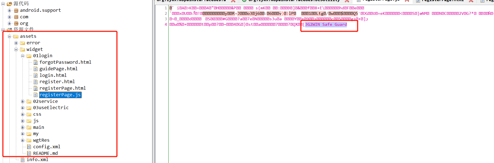
每个资源文件都是被加密过的，且每个文件的最后一行都有 "3G2WIN Safe Guard" 标识。通过assets\widget\js\appcan.js 文件名搜索发现用的是Appcan这个移动平台
http://newdocx.appcan.cn/newdocx/docx?type=1247_1234
说明：AppCan IDE为开发者提供了应用加密功能，支持全包（.html文件、.css文件、.js文件）加密及部分（可选文件）加密，以保证您的代码安全。
为了进一步渗透分析，只能解密资源文件了。
正文
一 分析
既然是网页实现肯定会用到webview 之类的框架，那么app对资源的加载流程可能为：
1)WEBVIEW - > 加载页面 -> 拦截/查找本地文件 有 -> 解密/写回数据
2)WEBVIEW - > 加载页面 -> 拦截/查找本地文件 无 -> 请求网络文件
这里有个共同的点都是需要 拦截,而 WebView 只有一个实现这个功能的接口: WebViewClient.shouldInterceptRequest
下面是shouldInterceptRequest API的介绍:
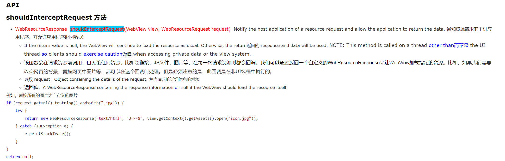
在Jadx 搜索这个方法,如图
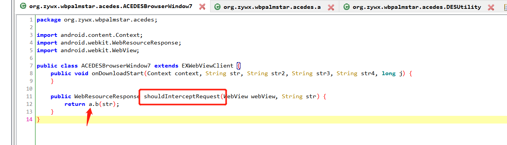
发现 a.b 方法，继续跟进
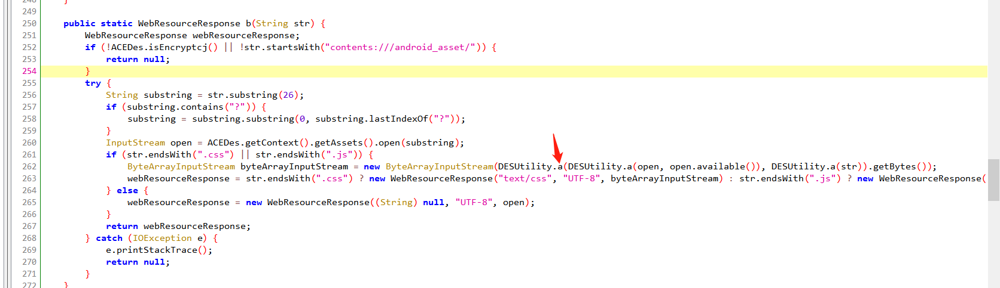
把这段代码粘贴下来 分析
public static WebResourceResponse b(String str) {
WebResourceResponse webResourceResponse;
if (!ACEDes.isEncryptcj() || !str.startsWith("contents:///android_asset/")) { //如果不是加密过的文件或者是不是以contents:///android_asset/ 开头的文件就退出
return null;
}
try {
String substring = str.substring(26);
if (substring.contains("?")) {
substring = substring.substring(0, substring.lastIndexOf("?"));
}
InputStream open = ACEDes.getContext().getAssets().open(substring);
if (str.endsWith(".css") || str.endsWith(".js")) { //判断是不是js和css文件
ByteArrayInputStream byteArrayInputStream = new ByteArrayInputStream(DESUtility.a(DESUtility.a(open, open.available()), DESUtility.a(str)).getBytes()); //返回真正的资源文件
webResourceResponse = str.endsWith(".css") ? new WebResourceResponse("text/css", "UTF-8", byteArrayInputStream) : str.endsWith(".js") ? new WebResourceResponse("text/js", "UTF-8", byteArrayInputStream) : null;
} else {
webResourceResponse = new WebResourceResponse((String) null, "UTF-8", open);
}
return webResourceResponse;
} catch (IOException e) {
e.printStackTrace();
return null;
}
}
这里就是Appcan的sdk了。关注DESUtility.a 这个方法就行，继续跟进
print('123')
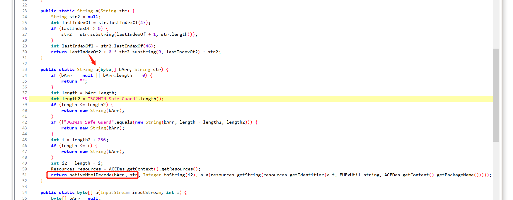
分析后我们发现了 “3G2WIN Safe Guard ”字符，以及关键方法 nativeHtmlDecode
这是一个native方法
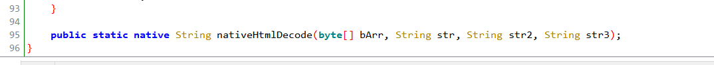
在代码上面我们发现了 这里load了一个so文件 ，"BDebug.TAG=appcan"
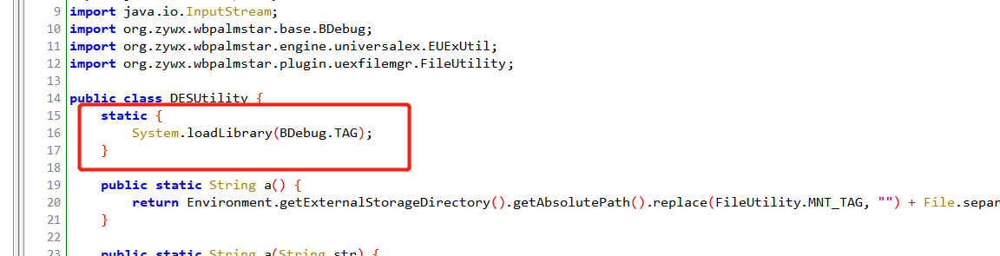
使用ida 打开appcan.so文件，是一个未导出函数，通过分析发现是sub_FD4方法，使用F5查看伪C代码

代码太长了，下面还有很多，就不贴了，看着着实让人头大。目前想到的有两个方法
1，死磕so文件的解密方法，然后写一个工具，直接解密
2，直接用Xposed hook DESUtility.a 方法把 返回的结果也就是明文的资源 保存起来即可。
显然我选第二个
二 编码
xposed 开发规范就不说了，这里直接贴代码
public void handleLoadPackage(XC_LoadPackage.LoadPackageParam lpparam) throws Throwable {
if ("app包名".equals(lpparam.packageName)) {
Log.d("appcan", "load app " + lpparam.packageName);
XposedHelpers.findAndHookMethod("android.net.Uri$HierarchicalUri",lpparam.classLoader,"getPath",new XC_MethodHook() {
@Override
protected void afterHookedMethod(MethodHookParam param) throws Throwable {
super.afterHookedMethod(param);
Log.d("Appcan--contentProvider", param.getResult().toString()); //获取 /android_asset/widget/js/swiper-3.4.1.min.js 文件路径
filename=param.getResult().toString(); //将文件路径 保存到filename里
}
});
Class clazz = lpparam.classLoader.loadClass("org.zywx.wbpalmstar.acedes.DESUtility");
XposedHelpers.findAndHookMethod(clazz, "a", byte[].class, String.class, new XC_MethodHook() {
@Override
protected void afterHookedMethod(MethodHookParam param) throws Throwable {
super.afterHookedMethod(param);
//Log.d("Appcan--result--xposed", String.valueOf(param.getResult()));
saveFile(param.getResult().toString(),filename); // hook org.zywx.wbpalmstar.acedes.DESUtility.a方法 返回值 为解密后的源码
}
});
}
}
public static void saveFile(String content, String fileName) { //保存文件的函数
String basePath = Environment.getExternalStorageDirectory().getPath() + "/appcan_dump";
String filePath = basePath + fileName;
Log.i("appcan-dump", "appcan.saveFile -> " + filePath);
try {
File file = new File(filePath);
File parentFile = file.getParentFile();
if (parentFile.isFile()) {
parentFile.delete();
}
parentFile.mkdirs();
file.createNewFile();
IOUtils.write(content,(OutputStream) new FileOutputStream(file),"utf-8");
} catch (IOException e) {
e.printStackTrace();
}
}
这段代码就是hook org.zywx.wbpalmstar.acedes.DESUtility.a 方法，然后调用saveFile 方法保存明文资源。
然后安装到模拟器上，在xposed激活，重启模拟器后，再次打开app，可以看到保存文件的日志
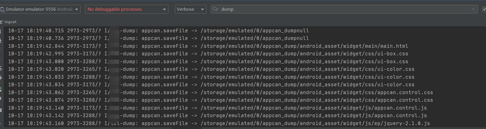
我们打开sdcard 目录下面的appcan_dump目录
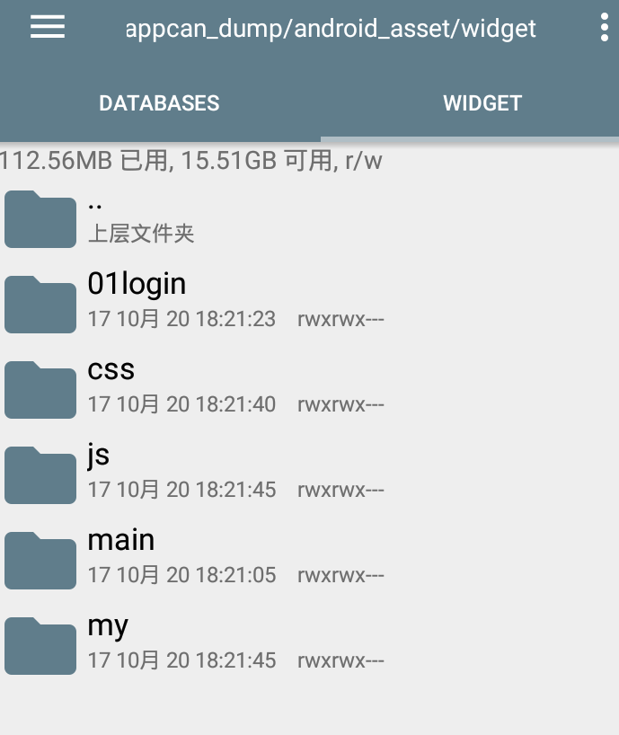
和app内的一样的结构目录文件都创建好了，如果文件dump不全就把每个功能都点一下，就会把文件保存下来，我们打开一个文件来看看
signVerify.js 解密之前：
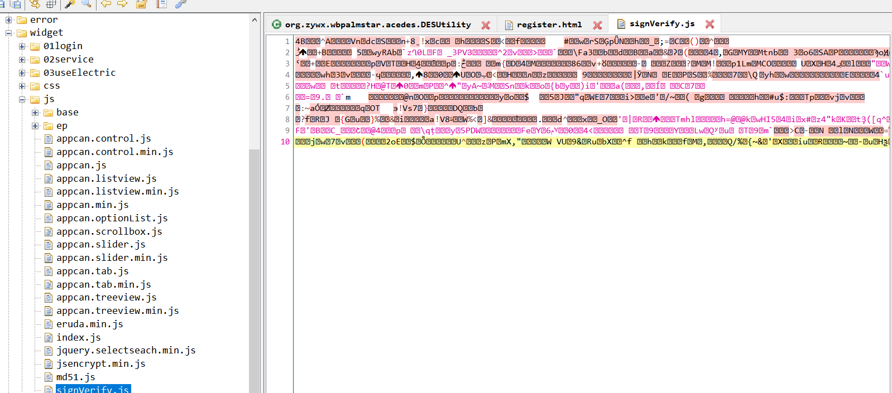
解密之后：
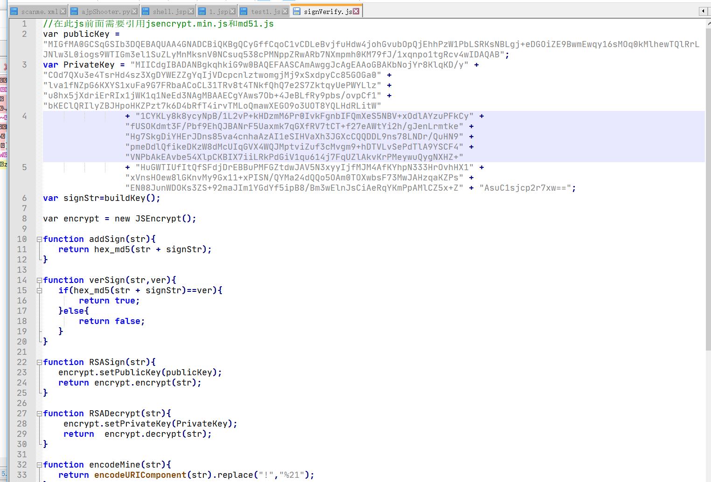
ok,这样我们就可以分析加密参数等一系列操作了
三 结尾
下一步，就是把hook 代码改一下，实现通用的，不然换一个app还得改一下代码。
Over！